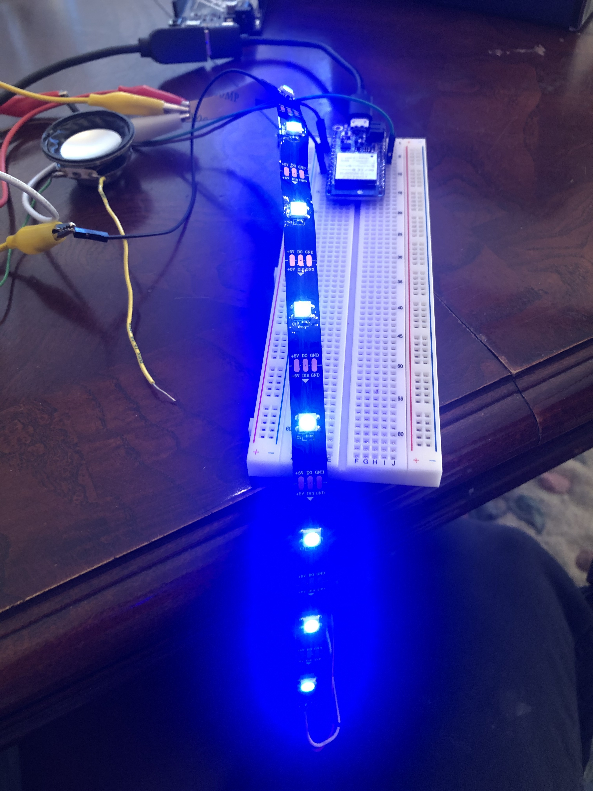

Week 10: IoT (Bluetooth and Wifi)
Goal: Demonstrate communication between a microcontroller and another device over Bluetooth or WiFi connection.
This week we are playing around with the Huzzah board, a board that is able to connect to Bluetooth and Wifi devices. This is an important connection to my final project, which ideally will be a Bluetooth/Wifi enabled symphony of speakers. I was able to go along with the code from the class website and work through the the examples
Example 1:
The first example was simply focused on talking to the board, based on having our computer and HUZZAH connected to the same WiFi network. The code was reasonably simply to work through. I simply connected to the same IP address where both boards were able to communicate saying, turn on or off, based on action buttons on the site. This is seen through the videos in my google drive below.

Example 2:
The second example was simply focused on talking to the board from anywhere. We know the Huzzah can connect to a wifi network as long as one exists, which I connected to my home network. However, now I connected it to a database on Firebase, which acts as a remote server. By giving the Huzzah the database link as well as a "secret code", the Huzzah is able to connect to it.3 The code was reasonably simply to work through. I simply connected to the same IP address where both boards were able to communicate saying, turn on or off, based on typing in the word on the database. However, this was able to be translated to a web page where we have an on and off button, accessible from anywhere! This is seen through the videos in my google drive below.
And here is the link to my Firebase web host..
Example 4 and extension:
The final example I took on was the bluetooth turning on and off, which was a little tricker to work with. I had to download the BLE Scanner and this allowed me to connect to the Huzzah from my phone itself. From this, I could input values that I wanted to wanted to "write" into my code. First, I completed the on-off of the light switch. What is important to note is the use of ASCII in the actual code, BUT the app only takes Hex or Text input. In the code, 49 represents 1 or on and 40 represents 0 or False.
I tried extending the bluetooth connection to both the LED light strip as well as the servo. Unfortunately, had little success in getting the strip to change colors based on the values I submitted (seeemed to only turn on). However, with the servo, I was able to turn on and off any sort of turn, based on a simple on off switch using bluetooth like the LED above. I have also gotten to use the inputs to tell the Servo to turn at certain degrees, but while the inputs create turns, the turns don't seem to be aligning with the values that I input in. I thought a cool applicaiton of this could be to make a clock that is able to change based on the turns of the servo and with the bluetooth it would be easy to switch based on different time-zones (possibly connect to wifi even), but have not really thought this through.
And here is the Link to my videos